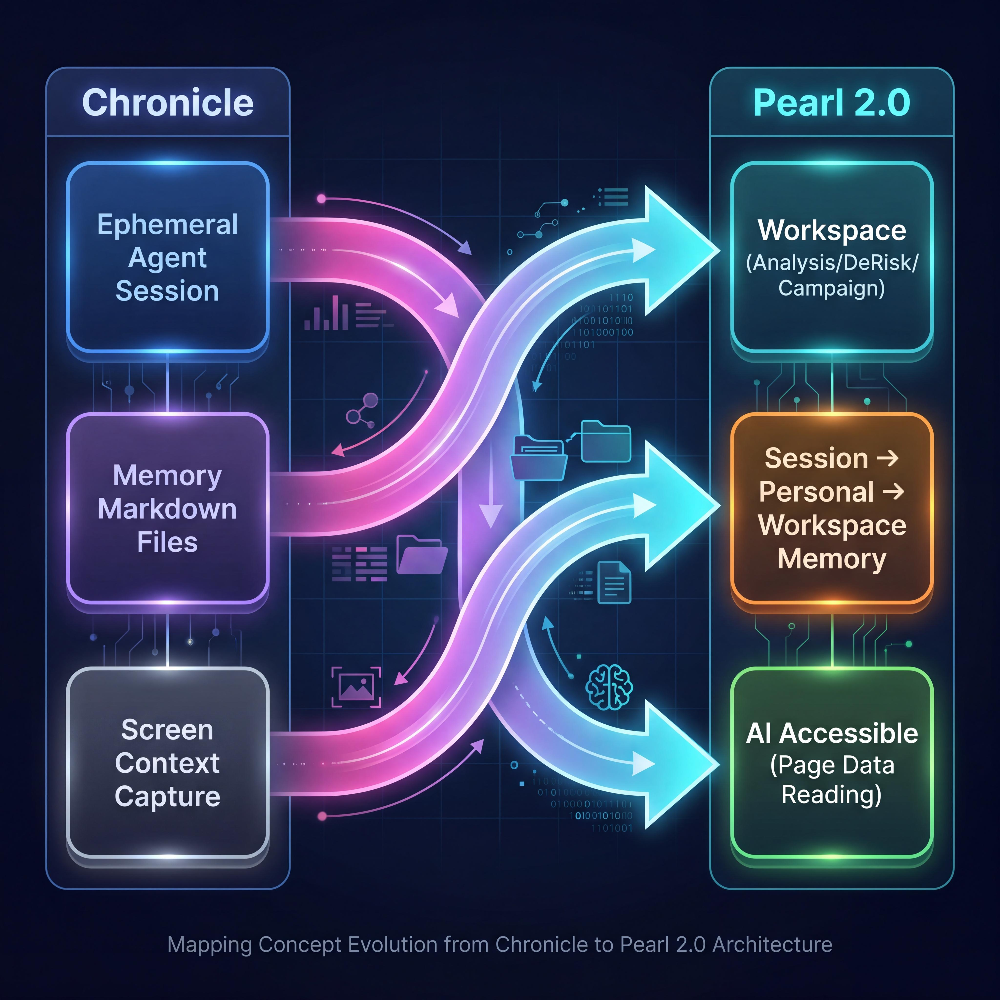
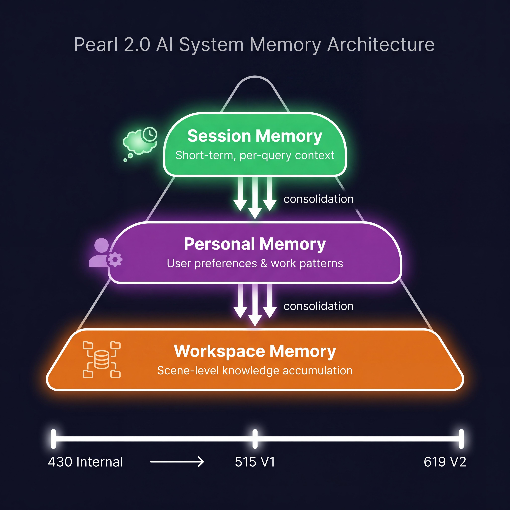
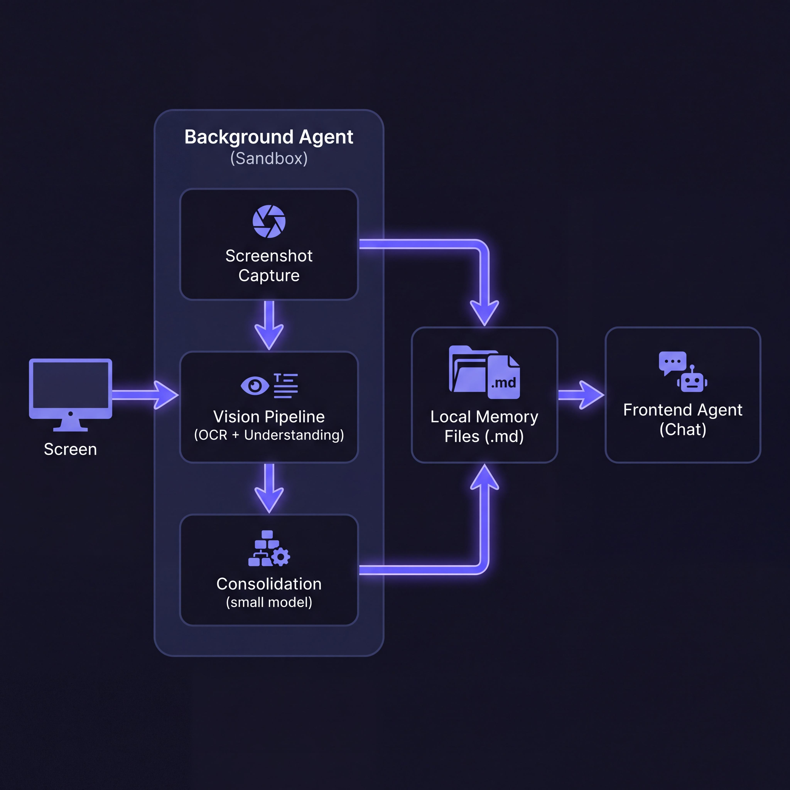
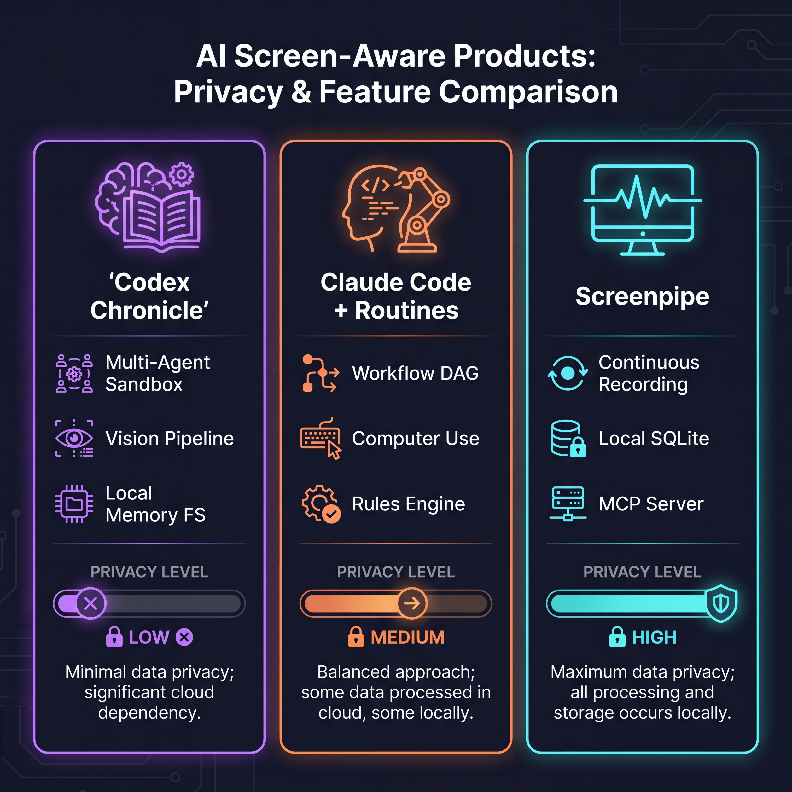

编程助手开始自己看屏幕了
🔥 对 Pearl 2.0 框架升级的启发
我们正在把 Tiko 从飞书机器人迁移到 Pearl 首页，构建 AI Native 的 CUI 体验框架。Chronicle 的"屏幕感知 → 本地记忆 → Agent 自主引用"架构，恰好给 Pearl 2.0 的三个核心命题——Workspace、Session/Memory、AI Accessible——提供了可直接对标落地的参考。

▲ Chronicle 核心概念与 Pearl 2.0 架构的对应关系
🧩 Workspace 的上下文隔离 — 从 Chronicle 的记忆文件系统学什么
~/.codex/memories_extensions/chronicle/ 下的 Markdown 文件中，不同主题的记忆自然归类。Pearl 的 Workspace 就是"按运营场景分文件夹"——每个 Workspace 有自己的 Skill 召回范围、上下文积累和历史 Output。PRD 现状：当前 Pearl 2.0 已定义 3 个 Workspace（Analysis、DeRisk、Campaign），但 PRD 中 Memory 部分只规划了 Session 级和个人级，Workspace 级 Memory 标注为"2期再考虑做"。
Chronicle 给的启发：不用等 Workspace Memory 的完整方案。先用一个轻量策略——每个 Workspace 维护一个 Context Summary 文件，类似 Chronicle 的记忆 Markdown。每次 Session 结束时，用小模型（类似 Chronicle 使用 gpt-5.4-mini 做 consolidation）将关键决策和数据摘要追加到该文件。下次进入该 Workspace 时自动加载。
💡 具体落地建议
- 430 内测版可做：每个 Workspace 增加一个
workspace_context.md字段，Session 结束时用 Tiko 的小模型提炼 3-5 条关键信息写入。成本增量约 200-500 tokens/session。 - 515 版演进：Context Summary 支持用户手动编辑（和 Chronicle 一样"unencrypted markdown that you can read and modify"），让 AM 可以主动标注"这个商家的降险策略我决定用 XX 方案"。
- 验证指标：同一 Workspace 下的追问轮次减少率、AM 手动重复描述背景的频次。
🖥️ CUI + Canvas 画布 — 让 Tiko "看到"运营正在操作的 Pearl 页面
PRD 中的关键设计：Pearl 2.0 已规划 Canvas 的"工具调起"组件——在 CUI 右侧调起 Pearl 域下页面，Agent 可读取对应页面数据（AI Accessible 改造后，Seller Mgmt 等页面已支持）。这本质上就是 Chronicle "截屏→理解" 的结构化版本，而且比截屏更精确。
💡 DeRisk 场景落地（515 版重点）
- 场景串联：AM 在 Canvas 打开 Seller Mgmt 查看商家罚单 → Tiko 自动读取页面中的罚单 ID、违规类型、处罚状态 → AM 在 CUI 问"这个罚单怎么解除"，Tiko 已经知道具体是哪个罚单，不需要 AM 复制粘贴。
- 对标 Chronicle：Chronicle 让用户说"修复刚才那个 Stripe webhook 超时"时 Codex 知道具体错误码。Pearl 让 AM 说"这个商家的 SPS 为什么掉了"时 Tiko 知道 AM 正在看哪个商家的哪个页面。
- 推进建议：515 版优先完成 Thunder Shop / Seller Mgmt / Shop Performance 三个 P0 页面的 AI Accessible 改造。每个页面输出标准化 JSON 供 Tiko 调用。
🧠 三层 Memory 映射 — Chronicle 的记忆分层如何指导 Tiko
Pearl PRD 的 Memory 设计：

▲ Pearl 2.0 三层 Memory 架构与演进路径
🔄 三层映射关系
- Session 级（短时记忆）：等同 Chronicle 的当前会话上下文。Pearl 已规划"per-query 创建 Session"，Session 内消息保留。✅ 已明确
- 个人级（全局记忆）：等同 Chronicle 的 Codex Memories（存储用户偏好和工作模式）。Pearl 规划了"个人 Memory"全局生效。建议参考 Chronicle：生成记忆时用小模型自动 consolidation，不增加 AM 操作负担
- Workspace 级（场景记忆）：等同 Chronicle 所没有的——但 Claude Code 用 AGENTS.md 部分实现了。这是 Pearl 的差异化优势。DeRisk Workspace 可积累"这类商家罚单通常是 XX 原因"的经验。
💡 落地建议
- 430 版：Session Memory 可直接上线（已有方案）。个人级 Memory 做最简版——记录 AM 的常查商家、常用看板、偏好语言。
- 515 版：个人级 Memory 增加自动 consolidation（每日/每周一次），让 Tiko 学习 AM 的工作模式而非被动存储所有对话。
- 619 版：Workspace Memory 上线，支持 DeRisk 场景积累"罚单类型→解决方案"的映射表，Analysis 场景积累"商家→关注指标"的偏好。
⚡ Copilot 模式 + 运营 Routine — 从 Claude Code Routines 学流程封装
PRD 中的 Copilot 定义：面向 AI-enabled 工具，AI 通过 Copilot 形式做"副驾"辅助操作。ShowCase：平台营销-货补方向正在开发 AI Enabled 货补工具。619 版还规划了 Scheduled Task 支持。
💡 运营 Routine 落地路径
- Phase 1（619 版 Scheduled Task）：先做"定时触发"——AM 设置"每天 10 点检查我的商家有没有新罚单"，Tiko 自动执行 DeRisk 查询并推送结果。
- Phase 2（H2）：引入 Routine 模板——Tiko 观察 AM 的高频操作序列（例如每周一巡店→查数据→写周报），主动建议"检测到你每周一都做这套巡检，要自动化吗？"
- Phase 3：Routine 市场化——高绩效 AM 的 Routine 可分享，新人 AM 可一键安装。对标 Codex 的 Skills/Plugin 生态。
和 Copilot 的结合：对于货补等 AI-enabled 工具，Copilot 在用户操作过程中积累模式，然后生成 Routine 建议。这形成了"人工操作→Copilot 观察→Routine 提炼→自动化执行"的渐进式 AI 渗透路径，和 PRD 中 Non-AI → AI-enabled → AI-Native 的演进完全一致。
💰 Chronicle 的成本教训 — Tiko 的感知策略必须精算
Tiko 的场景更敏感——如果对每个商家的每次操作都做"上下文感知"，推理成本会爆炸。必须事件驱动 + 分级感知：
🔧 三级感知策略
- Level 1 — 被动：AM 发起 CUI 提问时，Tiko 从当前 Canvas 页面自动获取上下文（AI Accessible 方案，几乎 0 额外成本）。
- Level 2 — 事件触发：商家操作触发关键事件（设置变更失败、订单异常、罚单新增）时，自动生成操作摘要注入下次会话。成本约 500 tokens/事件。
- Level 3 — 主动：仅对 VIP 商家或高频求助商家开启"操作轨迹持续追踪"，类似 Chronicle 的 always-on 模式。按需开启，数据驱动。
关键数字参考：Chronicle consolidation 用 gpt-5.4-mini（成本低）。Tiko 的 Workspace Context Summary 也应该用小模型做压缩——大模型负责理解和回答，小模型负责记忆压缩和归档。
🔍 研究缘起
点击卡片展开详细背景
Chronicle 是什么？表面 vs 架构本质
OpenAI 于 2026-04-20 为 Codex 桌面端推出 Chronicle。表面上看，它是"后台截屏 + 生成记忆"的功能。但深入架构来看，它代表了一种全新的 Agent 架构模式：

▲ Chronicle 多 Agent 架构：后台沙箱 Agent 负责感知，前台 Agent 负责交互，通过本地记忆文件解耦
记忆文件系统：生成的记忆存放在 ~/.codex/memories_extensions/chronicle/，格式为未加密 Markdown。而 Chronicle 使用的 consolidation 模型可在配置文件中指定（默认 gpt-5.4-mini），形成了"感知层用小模型、推理层用大模型"的分层推理架构。
临时截图管理：截图临时存储在 $TMPDIR/chronicle/screen_recording/，运行期间 6 小时以上的自动清除。截图本身不上传到 OpenAI 服务器永久存储——而是在处理成记忆后丢弃。这是一个"原始数据短暂、衍生数据持久"的存储策略。
为什么这件事值得深度关注？三层架构变革
架构层（真正值得关注的）：
🔍 三个架构范式转变
- Agent Sandbox 化：Chronicle 的后台 Agent 运行在独立沙箱中，有自己的 session 和 rate limit 消耗。这预示着未来 AI 产品的架构走向——前台交互 Agent + 多个后台感知/执行 Agent 的协作模式。
- Vision-to-Text Pipeline 成为基础设施：截屏→OCR/视觉理解→结构化文本→记忆 Markdown。这条 Pipeline 正在标准化，意味着任何"用户看到的内容"都可以变成 Agent 的上下文。
- 记忆从"对话副产品"变成"一等公民"：Chronicle 的记忆文件是独立管理的资产（可读、可编辑、可搜索、可删除），而不是藏在对话历史里的隐含信息。这改变了 AI 产品的数据模型。
生态层：Chronicle 和 Codex 的 90+ Plugins、Skills、MCP Servers 共同构成了一个"感知+记忆+工具"三位一体的 Agent 架构。单独看任何一个功能都不惊艳，组合在一起就是完整的 Agent 操作系统。
三个竞品的架构差异——不只是功能对比

▲ 三款 Screen-Aware 产品的核心架构差异
① OpenAI Codex Chronicle — 架构关键词：Ephemeral Agent + Vision Pipeline + Local Memory FS
后台沙箱 Agent 定期截屏，云端处理后生成本地 Markdown 记忆。核心创新在于将"环境感知"拆分为独立 Agent，与主交互 Agent 通过记忆文件系统解耦。
② Anthropic Claude Code + Routines — 架构关键词：Workflow DAG + Computer Use + Rules Engine
Routines 将 prompt + repo + connectors 封装为可复用流程，本质上是声明式工作流引擎。Computer Use 提供直接操控桌面的能力，但更侧重"执行"而非"感知"。CLAUDE.md 作为项目级规则文件对标 AGENTS.md。
③ Screenpipe（MIT 开源） — 架构关键词：Continuous Recording + Local-first + MCP Server
24/7 全量录屏 + 音频 Whisper 转写 → 全本地 SQLite 存储 → 暴露为 MCP Server 供任意 AI 工具查询。最纯粹的"记录层"——不做推理，只做感知和存储。架构上最解耦，但也意味着需要其他 Agent 来消费数据。
隐私架构的三种选择
Chronicle 的隐私架构选择值得深入分析，因为这直接决定了产品的可用范围和企业级适配性：
🔒 三种隐私架构对比
- Chronicle："本地采集 + 云端处理 + 本地存储" — 截图存本地、发云端做视觉理解、记忆写回本地。结果：EU/UK/瑞士直接不可用，企业数据合规风险大。且本地 Markdown 文件未加密，同机器的其他程序可读取。
- Claude Code："云端全栈" — 会话和推理全在 Anthropic 云端。CLAUDE.md 文件本地但只是规则配置。隐私依赖 Anthropic 的数据政策。
- Screenpipe："全本地" — 采集、处理、存储全在设备端。隐私最强，但需要本地算力。数据永不离开设备。
对 Pearl 的启示：Pearl 处理的是 TikTok Shop 商家经营数据——属于高敏感业务数据。Pearl 2.0 的 Memory 和 Context 方案必须采用"服务端处理 + 服务端存储 + 严格权限隔离"的架构，不能走 Chronicle 的"本地不加密"路线。
⚔️ 赛道横向对比
点击任意维度行展开详细说明
| 维度 | Codex Chronicle | Claude Code + Routines | Screenpipe（开源） |
|---|---|---|---|
| 核心架构 | 多 Agent + Vision Pipeline + 记忆 FS | Workflow DAG + Computer Use + Rules | Continuous Recording + MCP Server |
| Chronicle：后台沙箱 Agent（ephemeral session）定期截屏，云端视觉理解后生成本地 Markdown 记忆文件。Consolidation 模型可配置（默认 gpt-5.4-mini）。 Claude Code：Routines 是声明式工作流引擎，将 prompt + repo + connectors 封装为可复用流程。Computer Use 提供直接桌面操控。 Screenpipe：纯感知层——连续捕获屏幕和系统音频，本地 OCR + Whisper 转写，数据暴露为 MCP Server 供任意 AI 消费。 | |||
| 上下文来源 | 屏幕截图（视觉） | 代码仓库+工具链+截屏 | 屏幕+音频+剪贴板+应用事件 |
| Chronicle 仅依赖视觉截图 + OCR 文本 + 时间信息 + 本地文件路径。Claude Code 以代码仓库和工具调用链为主。Screenpipe 最全面——屏幕、麦克风、系统音频、剪贴板全部采集。 | |||
| 记忆架构 | 本地未加密 MD + 自动 consolidation | 云端会话 + 本地 CLAUDE.md 规则 | 100% 本地 SQLite + MCP 查询 |
| Chronicle 的记忆是"可读可编辑的 Markdown 资产"，用小模型做自动压缩合并（consolidation_model 可配置）。截图临时文件 6h 后自动清理。Claude Code 会话记忆在云端，项目级记忆通过 CLAUDE.md 维护。Screenpipe 全部数据存本地 SQLite，支持全文检索。 | |||
| Agent 协作模式 | 前后台分离 | 单 Agent + 工具调用 | 纯数据管道 |
| Chronicle 首次在消费级产品中实现了"前台交互 Agent + 后台感知 Agent"的 multi-agent 协作。Claude Code 仍然是单一 Agent 通过工具调用扩展能力。Screenpipe 不包含 Agent，只提供数据管道。 | |||
| 隐私安全 | 较弱 | 中等 | 最强 |
| Chronicle 截图发至 OpenAI 云端处理（处理后不永久存储），本地记忆文件未加密。明确警告存在 prompt injection 风险。EU/UK/瑞士不可用。Screenpipe 全本地处理，MIT 开源，数据不出设备。 | |||
| 成本模型 | 持续消耗 Rate Limit（被动成本） | 仅交互时消耗（主动成本） | 本地算力（固定成本） |
| Chronicle 最大争议点：后台 Agent 持续消耗 Rate Limit，社区大量反馈"开启后额度快速耗尽"。$200/月 Pro 订阅的可用额度被显著压缩。Claude Code 仅在用户主动交互时消耗。Screenpipe 使用本地模型（Whisper 等），成本可控。 | |||
| 平台 | 仅 macOS (Apple Silicon) | macOS/Linux/Windows | macOS/Windows/Linux |
| Chronicle 需要 macOS Screen Recording 和 Accessibility 权限。仅限 Apple Silicon Mac。Claude Code 跨平台。Screenpipe 三大桌面平台全部支持。 | |||
| 定价 | Codex Pro $200/月 | Claude Max $100–200/月 | $400 买断/开源免费 |
| Chronicle 包含在 Codex Pro 订阅中但消耗额度（实际使用成本远高于标价）。Screenpipe 提供买断和开源自部署两种选择。 | |||
🎯 典型使用场景
点击场景卡片查看完整描述
多窗口调试 + 跨工具跳转
架构解读：这个场景背后是 Chronicle 的后台 Agent 在持续工作——每隔一段时间截取屏幕，OCR 提取文字，Vision 模型理解布局语义，然后将"17:32 查看 Stripe webhook 超时错误 504"这类信息写入记忆文件。当你提问时，前台 Agent 检索记忆文件找到相关上下文。
长周期项目的连续记忆
记忆 Consolidation 机制：Chronicle 不会无限积累原始截图数据。通过 consolidation 模型（可配置为 gpt-5.4-mini）定期将短期记忆压缩为长期摘要，实现"记得住重点、忘得掉细节"的类人记忆效果。
Prompt Injection 风险场景
这揭示了"屏幕感知型 Agent"的根本安全挑战：Agent 能看到的不仅是有用的上下文，也包括攻击面。任何做"被动感知"的产品（包括 Pearl 的 AI Accessible 方案）都需要在输入层做内容审查和指令过滤。
💡 Core Learnings
点击卡片展开完整分析
1. 多 Agent 协作架构正在进入消费级产品
启发：Pearl 2.0 的架构应该考虑"Agent 分层"——Tiko 前台处理对话，后台可以有专门的"数据巡检 Agent"（巡店场景）、"风险监控 Agent"（DeRisk 场景）持续运行并更新 Workspace Context。
2. 记忆成为独立管理的"AI 资产"
启发：Pearl 2.0 的 Resource 模块设计方向正确。建议增加"Memory Explorer"——让 AM 可以看到 Tiko 记住了关于自己的什么信息、哪些记忆影响了推荐结果，并且可以编辑/删除。
3. "感知层用小模型、推理层用大模型"的分层推理
启发：Tiko 的 Workspace Context Summary、个人 Memory consolidation、事件摘要生成都应该用小模型/轻量模型处理。只有在 AM 直接对话时才调用完整的 Agent 推理链。这可以将"被动感知"的成本降低 80%+。
4. Prompt Injection 是"屏幕感知"的系统性风险
启发：Pearl 的 AI Accessible 方案（Agent 读取页面结构化数据）比 Chronicle 的截屏方案安全得多（结构化 JSON vs 任意屏幕内容），但仍需要在 Agent 输入层做指令过滤——特别是当读取的 Pearl 页面中包含商家输入的自由文本时。